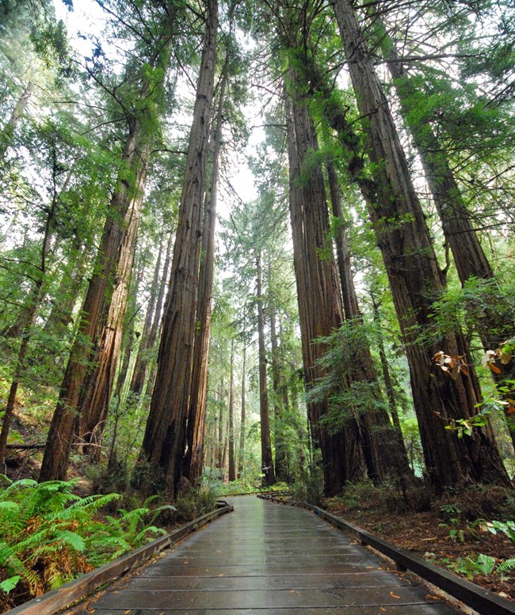
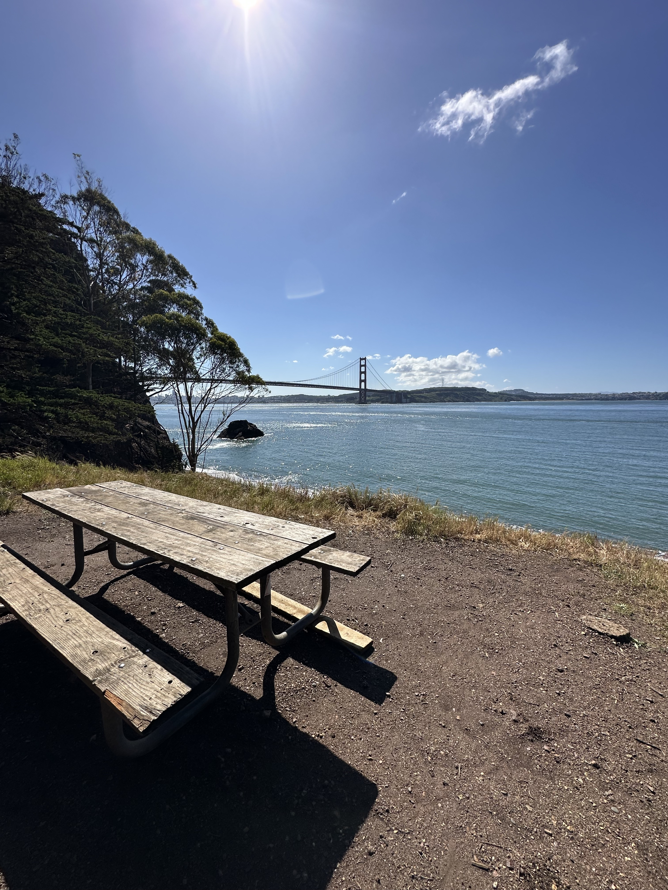
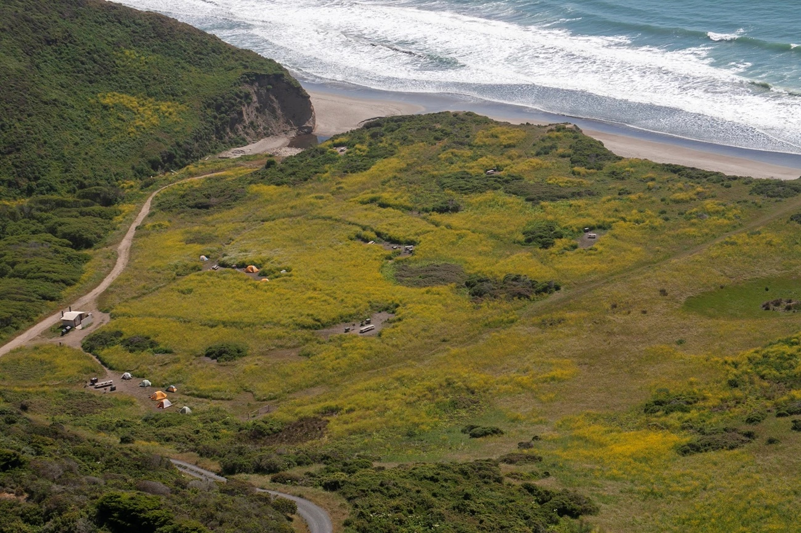

Our inaugural Student Expedition will bring 12 students together for eight program days spread across approximately one month. Rather than a collection of separate trips, the experience is designed as one progressive journey—beginning close to home, building outdoor skills step by step, and culminating in a three-day, two-night backpacking expedition at Point Reyes.
Our goal is to fully fund the inaugural cohort so all 12 students can participate at no cost. Each phase intentionally prepares students for what comes next while building relationships, confidence, judgment, practical outdoor skills, and leadership along the way.

The experience begins close to home with a program introduction, icebreakers, group expectations, and a half-day hike at Lands End. Students meet their instructors, begin getting to know one another, and establish the foundation for the experiences ahead.
The cohort then comes back together for a full-day hike and team-building experience in Muir Woods focused on communication, cooperation, group problem-solving, and becoming comfortable traveling together outdoors.

The cohort progresses to a base-camp experience at Kirby Cove. With a supported campsite serving as the classroom, students begin learning and practicing the outdoor systems they will rely on during the culminating backpacking expedition.
Students take increasing responsibility for camp life while developing the skills needed to organize gear, establish camp, prepare meals outdoors, navigate, travel responsibly, make decisions as a group, and care for themselves and one another outside.

The experience culminates in a three-day, two-night backpacking expedition at Point Reyes. Students carry what they need, travel together as a team, establish camp, prepare meals, and put the skills and systems they have developed throughout the program into practice.
Instructors continue to provide professional supervision and support while creating opportunities for students to take greater ownership of responsibilities, decisions, and leadership within the group.
The inaugural expedition is designed to be the beginning of a longer relationship with students, not the end of one. Our long-term vision is to invite members of the cohort back for new experiences throughout high school.
As students grow, future expeditions can introduce new environments, greater challenges, deeper technical skills, and increasing opportunities for independence and leadership. For students who choose to continue through the program, that progression can culminate in a senior Apex Experience that brings together the skills, judgment, confidence, and relationships developed along the way.
Students and families participating in the inaugural expedition are only committing to the 2027 program. Future Side Quest experiences will be offered separately as opportunities for students who want to return.
We are currently building the funding, partnerships, and program support needed to fully fund our inaugural cohort of 12 students. Students, families, educators, donors, and community partners are invited to contact us to learn more.
Contact Side Quest